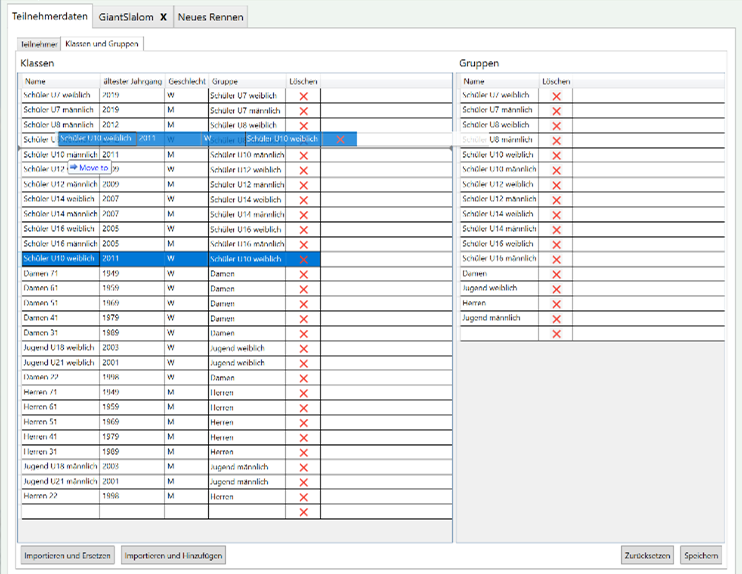
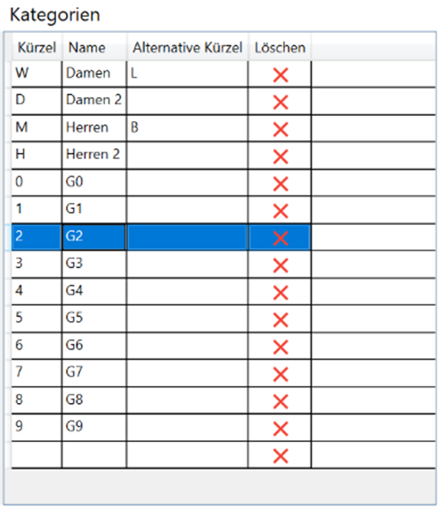

Teilnehmer
Race Horology unterscheidet zwischen Teilnehmer für einen Wettbewerb und Teilnehmern für ein Rennen. Grundsätzlich muss ein Teilnehmer eines Rennens auch ein Teilnehmer des Wettbewer-bes sein. Weiterhin werden die Teilnehmer einer Klasse bzw. einer Gruppe zugeordnet. Diese soll-ten angelegt werden, bevor die Teilnehmer hinzugefügt werden.
Klassen, Gruppen und Kategorien
Erstellen und Editieren von Klassen und Gruppen

Das Erstellen und Editieren von Gruppen findet man in der Tabelle Teilnehmerdaten und der Sub-Tabelle Klassen und Gruppen.
Um eine neue Gruppe oder Klasse anzulegen, muss man in der entsprechenden leeren Zeile die Daten eingeben. Um eine Gruppe oder Klasse zu löschen, auf das entsprechende „X“ klicken.
Mittels Drag and Drop können die Einträge verschoben werden, um die Reihenfolge innerhalb der Gruppen und Klassen festzulegen.
Hinweis: Beim Jahrgang kann auch das Alter angegeben werden. Das Alter wird in die entspre-chende Jahreszahl umgewandelt. Annahme hierfür ist, dass die Saison immer am 1. Oktober eines Jahres anfängt.
Wichtig: Die Änderungen werden erst nach dem Drücken von Speichern übernommen.
Erstellen und Editieren von Kategorien

Kategorien werden wie Klassen und Gruppen editiert. Standardmäßig sind bereits gebräuchliche Kategorien definiert. Sie müssen daher deutlich weniger angepasst werden.
Bei den Kategorien gibt es folgende Datenfelder:
- Kürzel
Das Kürzel ist die Kurzform der Kategorie und wird beim Datenimport bzw. -export benutzt. Üblicherweise wird das Geschlecht eines Teilnehmers durch das Kürzel ausgedrückt. Groß-kleinschreibung ist hierbei egal.
- Name
Die Langform der Kategorie.
- Alternative Kürzel
Es gibt Fälle, in denen die Importdaten nicht immer die gewünschten Kürzel enthalten, z.B. könnten Importdaten anstelle von D für Damen ein L für Lady enthalten. Mit dem Alternativen Kürzel ist es in diesem Beispiel möglich, die Lady-Einträge dennoch den Damen zuzu-ordnen.
Hinweis: Um mehrere Alternative Kürzel anzugeben können diese einfach nacheinander stehen. Beispiel: „DL“ Beim Export hat das Alternative Kürzel keine Auswirkung.
Klassen und Gruppen importieren
Klassen und Gruppen können von anderen Bewerbsdateien importiert werden. Hierbei können entweder alle Klassen und Gruppen importiert und die bestehenden Klassen und Gruppen ersetzt werden, oder die neu importierten Klassen und Gruppen werden zu bereits existierenden Klassen und Gruppen hinzugefügt.
Drücken Sie dazu entweder Importieren und Ersetzen oder Importieren und Hinzufügen und wählen Sie die Bewerbsdatei aus, deren Klassen und Gruppen importiert bzw. hinzugefügt werden sollen.
Wichtig: Die Änderungen werden erst nach dem Drücken von Speichern übernommen.
Klassen und Gruppen zuweisen

Klassen und Gruppen müssen typischerweise nicht neu zugewiesen werden, da diese durch den Jahrgang festgelegt ist und automatisch zugewiesen werden. Dennoch gibt es folgende Möglichkei-ten die Klasse einem Teilnehmer zuzuweisen:
- Auswahlbox bei Teilnehmer editieren
Mit der Auswahlbox bei Teilnehmer editieren kann die Klasse explizit überschrieben wer-den.
- Zurücksetzen bei Teilnehmer editieren
Der Button Zurücksetzen setzt die Klasse für den aktuellen Teilnehmer wieder auf Basis des Jahrgangs des Teilnehmers zurück.
- Klassen aller Teilnehmer zurücksetzen
Der Button Klassen neu zuweisen setzt die Klassen alle Teilnehmer auf Basis des Jahrgangs zurück.
Teilnehmer manuell hinzufügen, ändern und löschen
Teilnehmer können in der Tabelle Teilnehmerdaten und Subtabelle Teilnehmer editiert werden. Teilnehmerdaten können sowohl direkt in der Tabelle (auf ein Feld Doppelklicken, um den Editiermo-dus zu aktivieren) als auch in der daneben befindlichen Detailansicht editiert werden.
Um einen neuen Teilnehmer hinzuzufügen, drücken Sie Teilnehmer hinzufügen. Der Button Teilnehmer löschen löscht alle markierten Teilnehmer nach einer Sicherheitsabfrage.
Achtung: Eventuell vorhandene Zeitdaten werden ebenso gelöscht.
Es ist auch möglich mehrere Teilnehmer gleichzeitig zu ändern. Dies kann hilfreich sein, um z.B. Vereinsnamen oder Nationen zu ändern sowie mehrere Teilnehmer zu einem Rennen hinzuzufügen. Gehen Sie hierzu wie folgt vor:
-
Selektieren Sie die zu bearbeitenden Teilnehmer in der Tabelle (
oder beim Auswählen halten). -
Verändern Sie die Felder in der Detailansicht. Die Änderungen werden bei allen ausgewählten Teilnehmern sichtbar, sobald der Cursor das Feld verlassen hat (sie also irgendwo an-ders hingedrückt haben).
Teilnehmer einem Rennen zuweisen
Die Teilnehmer können einem oder mehreren Rennen zugewiesen sein. Man kann die Rennteilnahme eines Teilnehmers auf drei Arten beeinflussen bzw. verändern:
- Häkchen in der Tabelle Teilnehmerdaten setzen oder entfernen
- Häkchen in der Detailansicht setzen oder entfernen
Hinweis: Durch das Auswählen von mehreren Teilnehmern, kann man mehrere Teilnehmer auf einmal zu einem Rennen hinzufügen oder entfernen.
- Bei Teilnehmer importieren die entsprechenden Rennen angeben.
Teilnehmer importieren
Folgende Importformate werden von Race Horology unterstützt:
- Textfiles (Komma oder Tab getrennte Datenfelder – CSV, TSV, TXT)
- Excel (XLS, XLSX)
- DSV Alpin ZIP Import Files

Der Import-Wizard wird gestartet über den Button Import im Tab Teilnehmer. Nach dem Auswählen der Datei wird der Import-Wizard angezeigt.
Im linken Bereich befindet sich die Datenvorschau. Sie zeigt die zu importierenden Daten an.
Im rechten Bereich befindet sich oben die Datenfeldzuordnung. Pro Race Horology Datenfeld kann ein Datenimportfeld ausgewählt werden. Stellen Sie hier die korrekte Feldzuordnung sicher.
Hinweis: Die Datenfeldzuordnung versucht eine sinnvolle Datenzuordnung auf Basis der Feldbe-zeichnungen zu erraten.
Im unteren rechten Bereich wird angegeben, zu welchem Rennen die Teilnehmer zugeordnet werden sollen. Aktivieren Sie die Rennen, zu denen die Teilnehmer importiert werden sollen – per Default sind dies alle.
Punkte aktualisieren
Punkte via Datei aktualisieren
DSV Punkte online aktualisieren
Startnummernvergabe

Die Startnummern werden pro Rennen den Teilnehmern zugewiesen. Dies erfolgt über die entsprechende Renntabelle in der Subtabelle Startnummern. Die Startnummern können manuell oder au-tomatisch per Zufall (Verlosung) vergeben werden.
Hinweis: Die Startnummern werden im Programm erst dann übernommen, wenn Speichern gedrückt wurde. Mit Zurücksetzen wird die Startnummernvergabe wieder zum letzten gespeicherten Stand zurückgesetzt.
Hinweis: Öfters kommt es vor, dass ein Startnummertrikot nicht genutzt werden kann. Race Horology unterstützt das nichtvergeben von bestimmten Startnummern. In Nicht zu vergebene Startnummern die Startnummern durch Komma getrennt eintragen, deren Startnummern nicht vergeben werden sollen.
Vorläufige Startliste
Der obere Bereich zeigt die vorläufige Startliste. Sie enthält pro Zeile die Startnummer und die zu-gehörigen Teilnehmerdaten.
Es kann vorkommen, dass manche Startnummern nicht vergeben sind. Mit dem Häkchen Zeige leere Startnummern können diese in der vorläufigen Startliste sichtbar gemacht werden. Dies ist hilfreich, um leere Startplätze bei einer manuellen Zuweisung zu identifizieren.
Mit Einfügen kann eine Startnummer vor die markierte Zeile eingefügt werden. Alle Teilnehmer danach werden um eine Startnummer nach hinten verschoben.
Mit Entfernen kann eine oder mehrere markierte Zeilen entfernt werden. Alle Teilnehmer nach der entfernten Zeile werden entsprechend nach vorne verschoben.
Alle Löschen entfernt alle bisherigen Startnummernzuweisungen.
Startnummern manuell zuweisen
Teilnehmer können manuell einer Startnummer zugewiesen werden. Gehen Sie hierzu wie folgt vor:
- „Startnummer“ angeben
Hinweis: Wenn nichts weiter eingegeben wird, zeigt dieses Feld automatisch auf die höchste vergebene Startnummer plus 1.
- Einen oder mehrere Teilnehmer auswählen.
Hinweis: Die Auswählreihenfolge bleibt erhalten und wird beim Zuteilen der Startnummer beachtet.
- Auf Teilnehmer zuweisen klicken.
Die ausgewählten Teilnehmer werden entsprechend der Auswahlreihenfolge aufeinanderfolgende Startnummern beginnend mit der angegebenen Startnummer zugewiesen.
Achtung: Wird eine bereits zugewiesene Startnummer angegeben, so wird diese Belegung über-schrieben. Der Teilnehmer, der vorher dies Startnummer hatte, ist in dem Fall in der noch zuzuwei-senden Teilnehmerliste zu finden.
Startnummern zufällig vergeben (Verlosung)
Typischerweise wird die Startreihenfolge verlost – sprich per Zufall vergeben. Dies erfolgt meist entsprechend einer Gruppierung.
Um Startnummern zufällig zu vergeben, gehen Sie wie folgt vor:
- Wählen Sie die Gruppierung.
Dies kann nach Klasse, Gruppe, Geschlecht oder aber auch gar keiner Gruppierung sein.
- Geben Sie die Verlosungszahl an.
Die Verlosungszahl gibt an, wieviel Teilnehmer via Zufall verlost werden. Die restlichen Teil-nehmer einer Gruppe werden entsprechend der Punkte absteigend oder aufsteigend sor-tiert zugeteilt. Ist die Verlosungszahl nicht angegeben, so werden alle Teilnehmer verlost.
- Geben Sie die Sortierrichtung an.
Die Sortierrichtung gibt an ob die Punkte aufsteigend oder absteigend sortiert betrachtet werden.
- Geben Sie die nächste Startnummer an.
Dies kann verwendet werden um z.B. zwischen Gruppen Platz für Nachmeldungen zu lassen.
-
Starten Sie die Startnummernzuweisung mit
-
Aktuelle Gruppe zuweisen
Geben Sie hierzu noch die Nächste Gruppe an. Es werden nur die Teilnehmer der aktuellen Gruppe zugewiesen.
oder
- Alle Teilnehmer zuweisen
Es werden alle restlichen Teilnehmer, Gruppe für Gruppe zugewiesen.
Hinweis: Standardmäßig werden die Parameter aus der Rennkonfiguration für die Startliste des 1. Durchgangs übernommen und sollten daher keiner weiteren Einstellung benötigen.